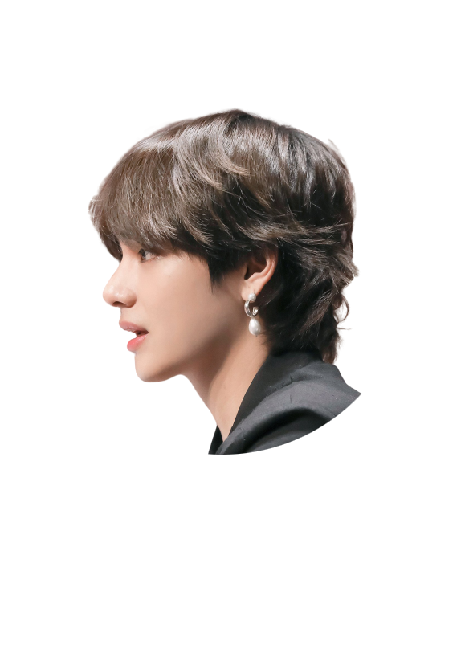
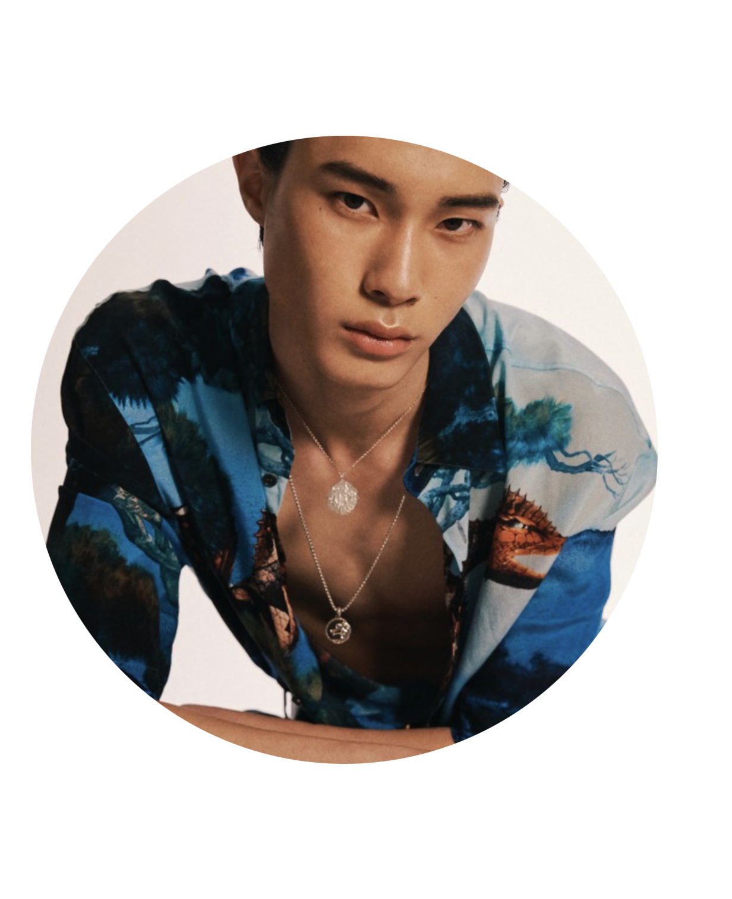

BTS 뷔가 진주귀걸이를 착용하고 나온 모습은 신선한 충격을 선사했다. 남성은 크고 우아한 주얼리가 어울리지 않을 것이라는 편견을 깨뜨렸다.

주얼리 브랜드에서도 젠더의 흐름을 읽고 남녀 성별에 구분을 두지 않은 주얼리들을 출시했다.

남성들의 주얼리는 크롬하츠처럼 두툼하고 러프한 럼디자인을 떠올리지만 얇고 심플한 매력이 있는 주얼리 또한 착용할 수 있다.
개인의 취향이 존중받는 개성 시대다. 이러한 흐름에 따라 패션에서도 새로운 바람이 불고 있다. 바로 성별의 경계를 넘은 스타일, 젠더리스 룩이 트렌드로 주목받고 있다. 젠더리스 패션은 자유롭고 새로운 패션 경향을 보여준다. 성과 나이에 한정되지 않으며 스스로 자유로운 의상을 선택할 수 있는 권리를 내포한다. 어떤 것보다도 강력한 패션 주체성을 뜻한다고 볼 수 있다. 여성들이 하듯이 남성 역시 성에 대한 장벽을 무너뜨리는 시도가 증가하고 있다. 남성에게 기대하는 남성스러움에 대한 무게감으로 인해 패션에 대한 자아실현을 쉽게 선보이지 못했지만 최근에는 많은 셀러브리티를 시작해 자신만의 철학을 담은 패션을 시도하는 남성이 늘고 있다. 남의 시선을 의식하지 않고 본인의 취향을 추구하는 심지어 멋스럽게 소화하는 그 모습은 ‘힙’해 보이기까지 한다. 남성도 더 이상 자신을 꾸미는 것에 방어적이거나 소극적인 행동을 취하지 않는다. 최근에는 남자 아이돌도 공식 석상에서 진주 귀걸이를 착용하기도 하며 뮤직비디오에서는 치마 형상을 한 의복을 입고있는 모습도 볼 수 있다.